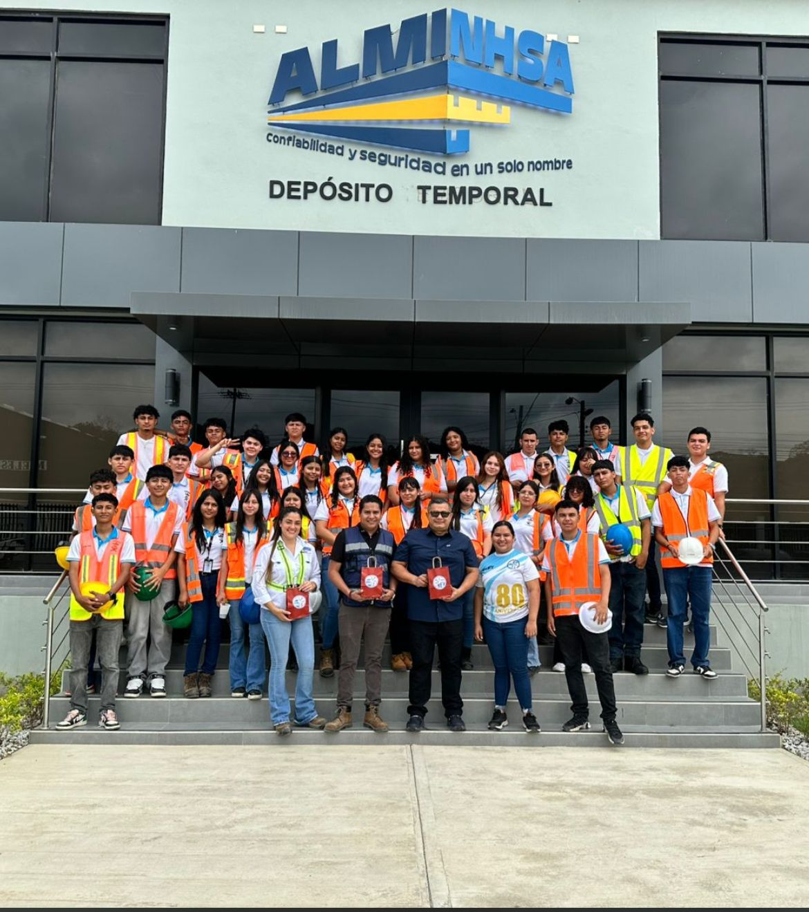
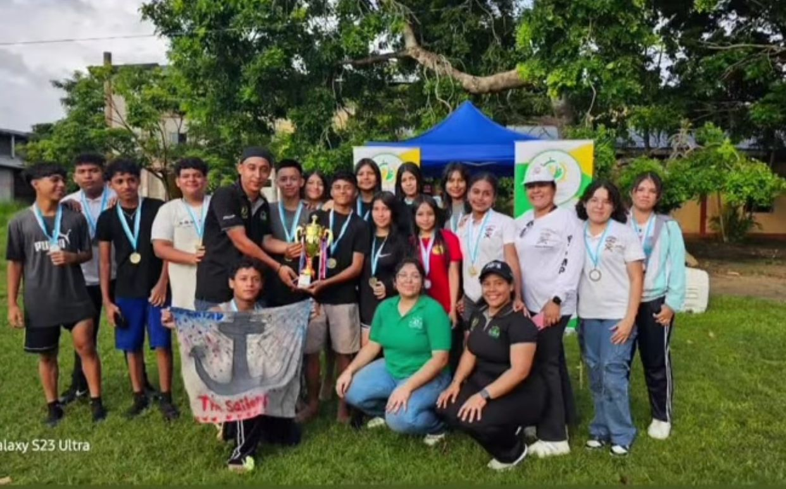
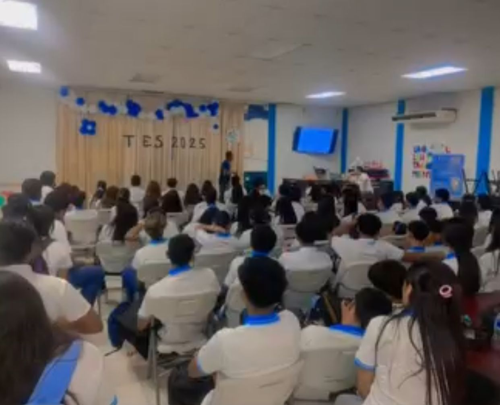

BTP en Marítimo y Portuario se enfoca en formar profesionales técnicos con conocimientos y habilidades para trabajar en el sector marítimo y portuario.

Programa Académico
Plan de estudios por años:
Ver asignaturas Décimo
Español: El objeto principal de esta asignatura es que los estudiantes adquieran destrezas en compresión y expresión oral y escrita y desarrollen la competencia comunicativa desde algunas de sus vertientes como pueden ser la pragmática, la lingüística o la sociolingüística entre otras.
Inglés: La asignatura de inglés, en el contexto educativo, se refiere a la materia o curso enfocado en el aprendizaje del idioma inglés, incluyendo sus aspectos lingüísticos, culturales y prácticos. En español, se puede traducir como "English subject" o "English course". Además, se puede referir a "English language" como el idioma en sí mismo, o "English studies" como la disciplina académica.
Informática: La "asignatura de informática" se refiere a un curso o materia que se enfoca en el estudio de las computadoras y los sistemas informáticos. Esta disciplina abarca tanto el hardware (la parte física de las computadoras) como el software (los programas y sistemas operativos). Además, la informática también incluye el estudio de cómo se procesa, almacena y transmite la información de forma automática.
Matemáticas: La asignatura de matemáticas es un campo amplio que incluye varias ramas como álgebra, geometría, cálculo, estadística, trigonometría, y aritmética, entre otras. Estas ramas se pueden agrupar en matemáticas aplicadas y matemáticas académicas. Las matemáticas son fundamentales para el razonamiento lógico, la resolución de problemas y el desarrollo de habilidades analíticas.
Sociología: La sociología es una disciplina que estudia la sociedad humana, sus estructuras, procesos y fenómenos. Se enfoca en analizar cómo las personas interactúan entre sí, cómo se forman los grupos sociales, y cómo funcionan las instituciones. En esencia, la sociología busca comprender la realidad social en todas sus dimensiones.
Educación física y deportes: busca desarrollar integralmente al estudiante a través de la actividad física y deportiva, promoviendo la salud, el bienestar y la adquisición de valores. Se enfoca en la mejora de las capacidades físicas, motrices, afectivas y cognitivas, utilizando el deporte como medio para alcanzar estos objetivos.
Historia de Honduras: es un curso académico que se enfoca en el estudio científico del pasado del territorio hondureño, analizando los eventos más importantes de las diversas sociedades que lo han habitado. El objetivo es comprender la evolución histórica, la cultura y la nacionalidad hondureña, fomentando el espíritu crítico y la capacidad de análisis en los estudiantes.
Psicología: explora el comportamiento humano y los procesos mentales. Se enfoca en áreas como la atención, la memoria, el desarrollo, la personalidad, las relaciones interpersonales y los trastornos mentales, además de abordar la interacción social, la motivación y la emoción.
Biología: se centra en el estudio de los seres vivos, abarcando su estructura, función, evolución y relaciones con el entorno. Es una disciplina amplia que incluye diversas ramas como la genética, ecología, microbiología, anatomía, botánica, zoología, entre otras.
Física: estudia los fundamentos del universo, incluyendo la materia, la energía, el espacio y el tiempo, y cómo interactúan entre sí. Se enfoca en entender las leyes fundamentales que gobiernan el comportamiento de la naturaleza y se divide en varias ramas, como mecánica, termodinámica, electricidad, magnetismo, y óptica.
Química: estudia la materia, su composición, estructura, propiedades y las reacciones que sufre. Se enfoca en entender los átomos, moléculas, y cómo interactúan, así como las leyes y principios que rigen estas interacciones. La química también explora las aplicaciones de estos conocimientos en diversos campos como la medicina, la industria y el medio ambiente.
Duodécimo
Frances:Asignatura orientada al aprendizaje del idioma francés, con énfasis en el vocabulario y estructuras necesarias para la comunicación en entornos turísticos, empresariales o marítimos. Se desarrolla comprensión auditiva, expresión oral y escrita.
Logística Portuaria:Estudia la planificación, organización y control del movimiento de mercancías dentro y fuera de los puertos. Incluye temas como almacenamiento, transporte, operaciones de carga y descarga, y coordinación entre diferentes actores de la cadena logística.
Inglés Técnico:Enseña el idioma inglés aplicado a contextos profesionales específicos, en este caso orientado al sector marítimo, portuario y de servicios. Se centra en términos técnicos, comprensión de manuales, comunicación operativa y redacción de documentos laborales.
Administración Marítima y Portuaria:Analiza la gestión y funcionamiento de las actividades marítimas y portuarias. Incluye administración de terminales portuarias, planificación de rutas marítimas, legislación marítima, comercio internacional y seguridad operacional.
Protección al Medio Marino:Estudia las acciones y normativas destinadas a conservar el ambiente marino y prevenir la contaminación provocada por actividades marítimas. Incluye el análisis de residuos, control de derrames, impacto ambiental y desarrollo sostenible en zonas costeras y puertos.
Emprendimiento Emprearial y Servivio al Cliente:Fomenta el desarrollo de ideas de negocio y habilidades emprendedoras en el sector de servicios. También fortalece la atención profesional al cliente, comunicación efectiva, manejo de quejas y creación de valor en productos o servicios.
Industría Marítima Auxiliar:Fomenta el desarrollo de ideas de negocio y habilidades emprendedoras en el sector de servicios. También fortalece la atención profesional al cliente, comunicación efectiva, manejo de quejas y creación de valor en productos o servicios.
Navegación:Fomenta el desarrollo de ideas de negocio y habilidades emprendedoras en el sector de servicios. También fortalece la atención profesional al cliente, comunicación efectiva, manejo de quejas y creación de valor en productos o servicios.
Actividades
Se centra en áreas como:
Gestión Portuaria:
Incluye la administración, organización y planificación de las operaciones portuarias.
Transporte Marítimo:
Abarca aspectos relacionados con el movimiento de mercancías y pasajeros por vía marítima, incluyendo la logística y el manejo de la carga.
Seguridad Portuaria:
Se enfoca en la aplicación de normas y procedimientos para garantizar la seguridad en las operaciones portuarias y el cumplimiento de regulaciones.
Operaciones Portuarias:
Comprende las actividades de carga y descarga, estiba, desestiba, y otras tareas relacionadas con el movimiento de buques y mercancías.

Prácticas Profesionales
Prácticas en empresas: Para aplicar los conocimientos adquiridos y obtener experiencia laboral.
Formación en idiomas: Especialmente inglés, dado que es fundamental para la comunicación en el ámbito marítimo internacional.
Desarrollo de habilidades blandas: Como trabajo en equipo, resolución de problemas y comunicación efectiva.

Contacto
Dirección: CEMG Franklin Delano Roosevelt, Puerto Cortés, Honduras